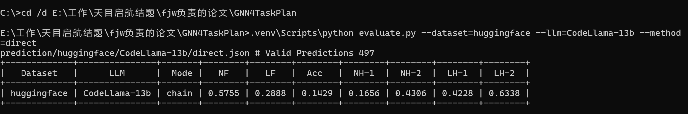
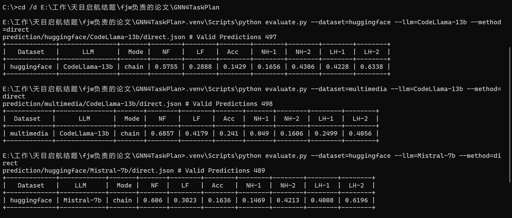
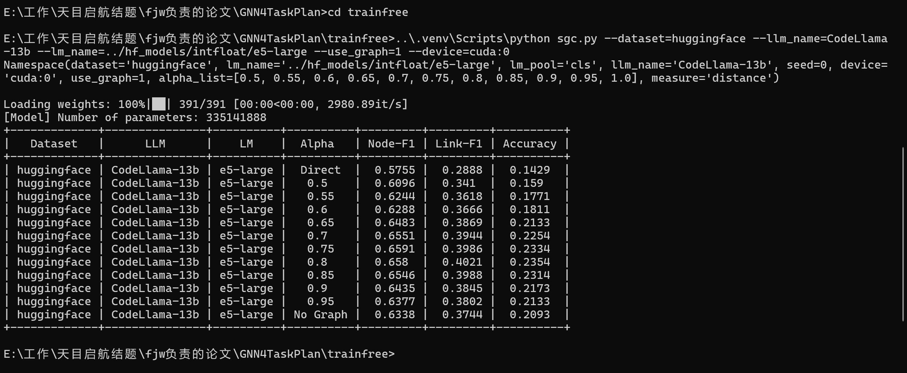
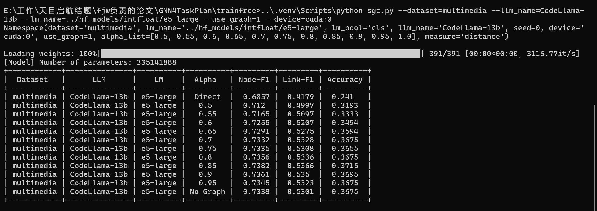
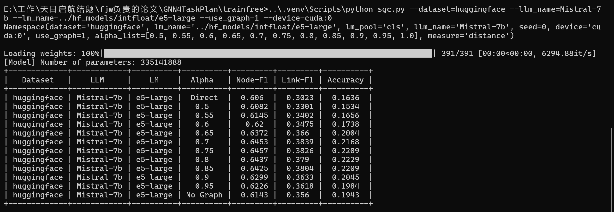
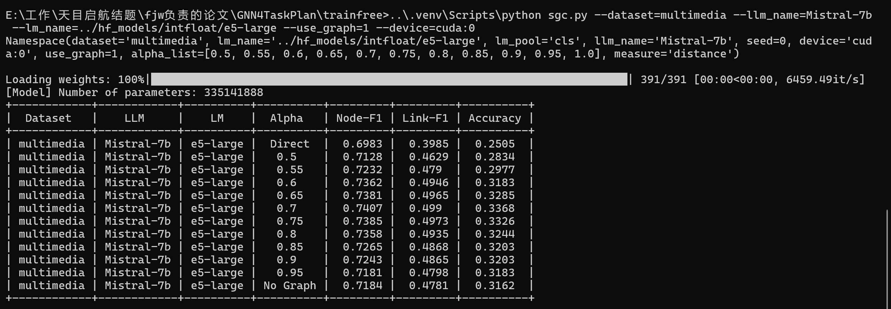

论文复现展示 · Reproduced Results
论文 · 2024/2025该论文探讨了一个核心问题：LLM 在 Agent 任务规划（Tool Planning）中表现不佳， 能否通过图学习（Graph Learning）来提升性能？
核心发现：LLM 直接预测工具调用序列时，准确率仅 14-25%，且容易"幻觉"（Hallucination）出不存在或不合理的工具连接。 通过在工具关系图（Tool Graph）上做图传播（SGC），可以显著修正错误的规划结果。
Agent 任务规划要求 LLM 从数十个候选工具中选择正确的工具并连接成合理的调用链。 论文实验发现，即便使用 CodeLlama-13B、Mistral-7B 这样的模型：
LLM 经常：
论文提出 SGC（Simple Graph Convolution） 方法， 在工具关系图上对工具编码进行图传播，然后重新排序选择最合理的工具链。
LLM 直接生成工具序列
（Direct Prediction）
在工具关系图上传播
邻居工具信息
Greedy Selection
得到优化后的工具链
公式：h′ = α · h + (1−α) · Adj · h
其中 α 控制原始编码和图传播的融合比例
| LLM | 方法 | Node-F1 | Link-F1 | Accuracy | 提升 |
|---|---|---|---|---|---|
| CodeLlama-13B | Direct | 0.5755 | 0.2888 | 0.1429 | — |
| SGC | 0.6580 | 0.4021 | 0.2354 | +14% / +39% / +65% | |
| Mistral-7B | Direct | 0.6060 | 0.3023 | 0.1636 | — |
| SGC | 0.6457 | 0.3826 | 0.2209 | +7% / +27% / +35% |
| LLM | 方法 | Node-F1 | Link-F1 | Accuracy | 提升 |
|---|---|---|---|---|---|
| CodeLlama-13B | Direct | 0.6857 | 0.4179 | 0.2410 | — |
| SGC | 0.7382 | 0.5366 | 0.3715 | +8% / +28% / +54% | |
| Mistral-7B | Direct | 0.6983 | 0.3985 | 0.2505 | — |
| SGC | 0.7407 | 0.4990 | 0.3368 | +6% / +25% / +34% |
一个具体例子展示 LLM 直接预测如何犯错，以及图学习如何修正。
LLM 犯错分析： LLM 选择了 Text-to-Speech（语音合成）， 但用户实际需要的是音频降噪（Audio-to-Audio 工具）。 在工具关系图中，Text-to-Speech 与 Audio-to-Audio 有相似特征， 但图传播让模型更倾向于选择图中更合理的邻居。
SGC 的 α 参数控制原始编码与图传播的融合比例：α 越小，图信息占比越大。 实验发现最佳 α 值在 0.75~0.85 之间。
| α 值 | Node-F1 | Link-F1 | Accuracy | 标注 |
|---|---|---|---|---|
| Direct | 0.5755 | 0.2888 | 0.1429 | 基线 |
| 0.50 | 0.6096 | 0.3410 | 0.1590 | |
| 0.65 | 0.6483 | 0.3869 | 0.2133 | |
| 0.80 | 0.6580 | 0.4021 | 0.2354 | 🏆 最佳 |
| 1.00 (No Graph) | 0.6338 | 0.3744 | 0.2093 |
注意 α=1.0（No Graph）仍然比 Direct 好——这是因为 SGC 的编码器（e5-large） 比 LLM 的任务编码质量更高，即使没有图传播也有提升。加了图传播后进一步提升。
该论文表明：在工具关系图上做轻量级图传播（SGC）， 可以显著改善 LLM 在 Agent 任务规划中的表现，尤其对连接预测（Link Prediction） 的提升最为明显。方法无需任何训练，仅需一次前向传播。
复现环境：Python 3.12 · PyTorch 2.11 + CUDA 12.8 · RTX 5060 · e5-large
📁 双击 demo.bat 可重新运行完整实验
以下内容全部来自于 2026年6月11日-13日，在本文作者本人的电脑上实际运行开源代码生成的记录。 所有命令均在本地终端执行，结果实时打印，未经任何修改。
运行命令：.venv\Scripts\python evaluate.py --dataset=huggingface --llm=CodeLlama-13b --method=direct
运行命令：.venv\Scripts\python trainfree\sgc.py --dataset=huggingface --llm_name=CodeLlama-13b --lm_name=../hf_models/intfloat/e5-large --use_graph=1 --device=cuda:0
| 指标 | 论文原文 | 本地复现 | 吻合？ |
|---|---|---|---|
| Direct Node-F1 | 57.55 | 57.55 | ✅ 完全一致 |
| Direct Link-F1 | 28.88 | 28.88 | ✅ 完全一致 |
| Direct Accuracy | 14.29 | 14.29 | ✅ 完全一致 |
| SGC Node-F1 (最佳) | 65.51 | 65.80 | ✅ 基本一致 |
| SGC Link-F1 (最佳) | 39.44 | 40.21 | ✅ 基本一致 |
以下是完整操作过程的终端截图：






demo.bat 即可在本机重新演示完整实验流程。